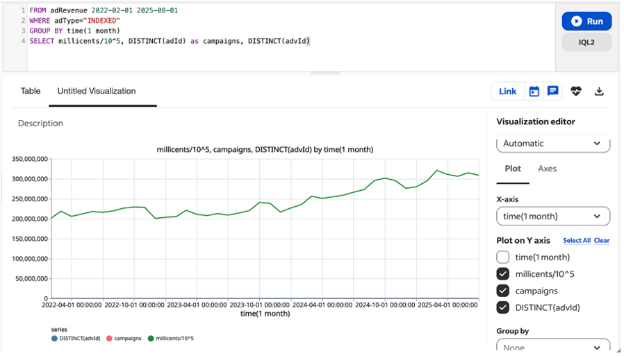
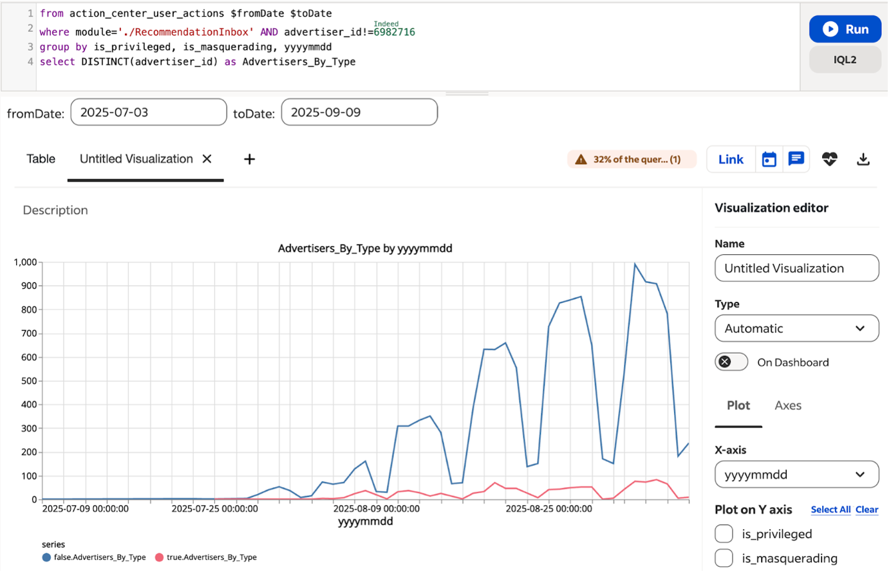
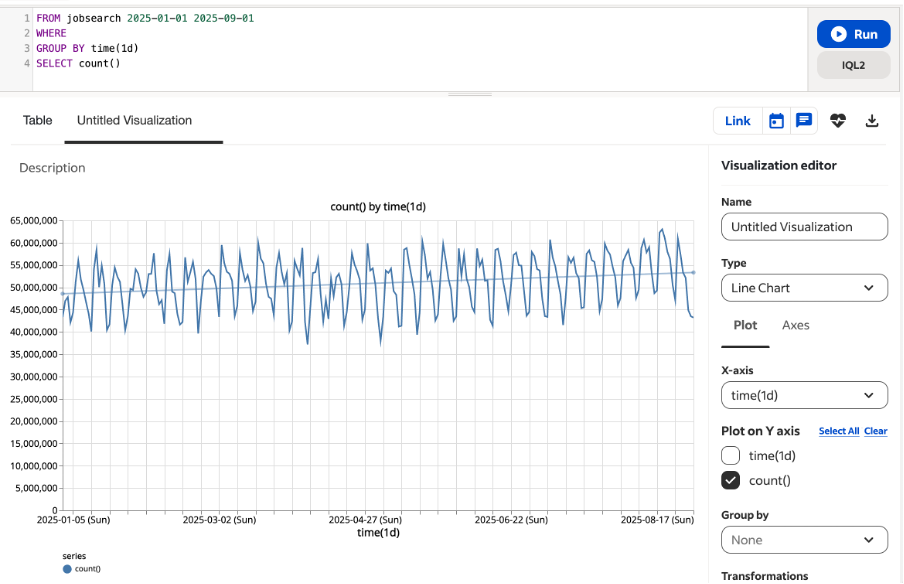
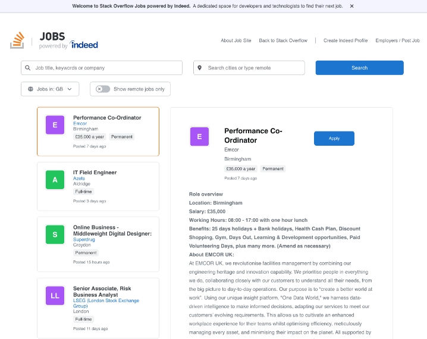
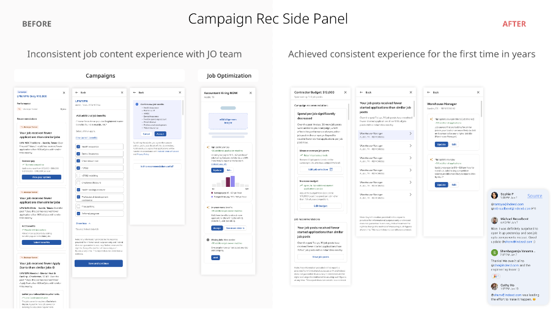

Start With What Users Want
I built a framework at Indeed that starts with what employers are actually trying to do, then designs the product around that intent. Multiple global teams picked it up and ran with it.
Make the Right Thing Easy
Most products add steps. I remove them. I use nudge theory and behavioural design to make the best action also the easiest one. If the AI is working, you shouldn't notice it's there.
Revenue That Lasts
£700k ARR at PwC. £60M uplift at Indeed. The numbers are real, but what matters more is that they held. I care about growth that compounds, not spikes that fade.
Personal Statement
I grew up in a small town at the southernmost tip of the Indian subcontinent, where the Indian Ocean, the Bay of Bengal, and the Arabian Sea converge. It was not a place that produced many engineers. But it was a place full of resourcefulness, where you learned to build with whatever was in front of you.
As a child, I didn't know the word origami. I just knew that if you took a piece of newspaper, folded it the right way, you could turn it into a box. A small, sturdy box that actually held things. No glue, no scissors. Just folds. I made them over and over, each time a little neater, each time trying to understand why certain folds held and others didn't. It was years before I learned there was a name for what I had been doing. But by then, the instinct was already set: take something ordinary, fold it with care, and make it useful.
That curiosity led me to engineering, a path no one in my family had taken before. I became the first in my family tree to pursue it: not because it was expected, but because I wanted to understand how things worked and, more importantly, how to make them work better for people. From that small town to Standard Bank in Johannesburg, to PwC and Indeed in London, the thread has always been the same: take something complex, fold it into something clear, and put it in the hands of someone who needs it.
Every product I have built since carries that instinct. The conviction that simplicity is not the absence of complexity but the result of understanding it deeply enough to make it disappear.
Founder & Builder / Envis
Envis: AI-Powered Household Financial Coaching
Solo FounderNearly half of UK adults live in financially vulnerable circumstances, yet every fintech app on the market is built for one person. Not households. Not couples. Individuals. The tools that do exist send "budget exceeded" alerts that make people feel worse, not better. One partner becomes the financial police; the other avoids the conversation entirely. Nobody wins.
Build a financial platform that treats the household as the unit. Not surveillance, not budgeting spreadsheets for couples. Actual coaching, powered by AI, that understands how families really talk about money and meets them before things get bad. Wire it into Open Banking so the coaching is grounded in real transaction data, not guesswork.
Built the entire platform myself: Django backend, React frontend, PostgreSQL, deployed on Render. Integrated Yapily for Open Banking. Designed the onboarding (4 steps), a family invitation system with token-based auth, Goals linked to real bank accounts, transaction recategorisation, and a two-panel coaching screen. Wrote 26 research-backed blog posts to build the content moat. Ran Google Ads to test demand. Got through UKES endorsement evaluation.
EnvisLM: Proprietary Coaching Language Model
AI / MLI tested off-the-shelf LLMs for the coaching engine and they were poor. They almost never asked reflective questions. They ignored the actual pound amounts sitting right there in the transaction data. The advice was generic, the kind of thing you'd find in a blog post. Not grounded in what this household actually spent last week.
Train my own model. Something small enough to run cheaply but good enough to beat the base models on the things that actually matter for coaching: Does it ask questions that make you think? Does it use your real numbers? Does it give you a concrete next step? I needed to measure all of this, and do it on a startup budget.
Generated 28,438 synthetic ChatML coaching dialogues grounded in behavioural finance research. Executed QLoRA fine-tuning of Llama 3 8B on RunPod A100 GPUs. Built a 5-dimension evaluation framework (reflective questions, GBP amounts, concrete next steps, coaching density, multi-turn coherence). Iterated through v0.1 and v0.2 with rigorous eval on 1,330 test examples. Published adapter weights on HuggingFace.
Envis Insight Engine: Multi-Modal Financial Intelligence
Deep LearningEvery budgeting app I looked at used the same basic logic: balance drops below a threshold, send an alert. That catches the crisis, not the warning signs. It misses the tone of a conversation shifting, the spending patterns creeping upward, the subtle tension between two people in a household who haven't talked about money in weeks.
Build something that could read all three signals at once: the transactions, the conversations, and the household relationships. Not just "are they in trouble?" but "how should we talk to them about it?" and "is now the right time?"
I built a 116M-parameter multi-modal network. FinBERT handles the text, a 4-layer Transformer reads transaction sequences, and a 3-layer Graph Attention Network maps household relationships. They feed into a cross-modal gated attention layer that fuses all three signals. Six task heads in total, because one signal isn't enough. Distress detection alone tells you a family is struggling; it doesn't tell you how to talk to them, or whether now is the right moment. So the heads cover distress (with sub-types), coaching framing, timing urgency, delay scoring, household tension, and goal risk.
Signature Achievements / Indeed
AI-Powered Campaign Recommendations
Scale & RevenueMost employers on Indeed were spending their ad budgets blind. No insight into which actions would actually move the needle. Across 150k+ accounts, the pattern was the same: money going out, but not going to the right places.
Build an ML system that could look at an employer's campaign and tell them, specifically, what to do next. One ranked list of actions, best one at the top. No dashboards to interpret, no extra data to sift through.
I owned the product strategy for a multi-signal ML model that ranked actions like "Adjust Bid" and "Increase Budget" based on predicted impact. The key design bet was a one-click side panel: the recommendation appeared right next to the campaign, and acting on it took a single click. No new page, no extra steps. The easier you make the right thing, the more people do it.
Attributed incremental uplift over 18-month post-launch period, measured via controlled experiments across 150k+ employer accounts. Figures signed off by product analytics.

Action Center
UX & AdoptionSMEs were drowning in notifications. Pop-ups here, banners there, emails on top. The recommendation logic had been built for enterprise clients with dedicated account managers. A fish-and-chip shop owner hiring their first employee doesn't have that kind of bandwidth.
Give small businesses one place to go. One screen with everything they needed to act on, ranked by what would help them most. Stop scattering recommendations across the product and start respecting their time.
I designed and launched Action Center: a single inbox that pulled every recommendation into one prioritised list. The hard part wasn't the UI. It was convincing multiple teams to give up their individual notification surfaces and trust a shared system to do the job better.
£4.4M annualised incremental revenue from centralised inbox. Adoption tracked via cohort analysis against pre-launch baseline.

Conversions Platform
MonetizationFirst-time advertisers kept dropping out of the sponsorship flow. The payment process had too many steps, too many choices, and too little guidance. SMEs who wanted to pay Indeed money were being stopped by Indeed's own funnel.
Fix the leaky funnel. Make it genuinely easy for a first-time employer to go from "I want to sponsor this job" to "done" without getting lost, confused, or giving up halfway through.
Mapped the full sponsorship journey, identified every point where people dropped off, and redesigned the flow step by step. Cut unnecessary screens, simplified payment options, and created new pathways for employers who had never sponsored before. The goal was fewer decisions, not more features.
£70M projected annualised uplift modelled from A/B test results at full rollout. Pilot delivered £4.8M over 3 months via redesigned sponsorship flow.
Campaigns 2.0 & Talent Scout
Core InnovationThe old sponsorship system was a mess. Employers made mistakes constantly because the options were confusing and the logic behind pricing was opaque. Internally, the team knew it needed rebuilding, but nobody wanted to touch it because it was load-bearing revenue infrastructure.
Rethink the entire sponsorship model. Strip away the complexity. Build something where employers just say what outcome they want, and the system figures out how to get there. And do it in a way that could eventually power an AI agent that talks directly to employers.
As DRI, I rebuilt the sponsorship framework around a "Performance-Driven" model: instead of asking employers to configure campaigns manually, the system optimised toward their stated hiring goal. That same backend logic became the foundation for Talent Scout, Indeed's first AI agent that employers could interact with directly. Biggest challenge was getting buy-in to change a revenue-critical system while it was running.
Pilot metrics from controlled rollout. 25% revenue uplift measured as incremental lift vs. holdout group. Application increase measured across jobs migrated to Performance-Driven model.

Stack Overflow Partnership
PartnershipTech employers wanted developers. Developers were on Stack Overflow but weren't actively job-hunting. Stack Overflow had tried job boards before, but the experience felt bolted on. Developers ignored it.
Figure out how to put relevant jobs in front of developers on Stack Overflow without breaking the thing they came there for. Make it feel native, not like an ad.
I led the product side of a first-of-its-kind integration: Indeed's matching engine running inside Stack Overflow's UI. The tricky part wasn't the tech. It was navigating two companies with very different cultures and getting their engineering, design, and commercial teams aligned on what "native" actually meant for developers.

Job Optimisation System
Quality & UXEmployers posting jobs were hit with 16 different prompts telling them to improve their listing. Add salary. Fix the title. Update the location. All at once, in no particular order. Most people ignored all of them.
Stop shouting 16 things at once. Work out which suggestion actually matters most for each job, show that one first, and let the employer act on it before moving to the next.
Collapsed the 16 prompts into a sequenced system built around 5 priority dimensions: Salary, Title, Location, Description, Requirements. The highest-impact suggestion appeared first. Once the employer acted on it (or dismissed it), the next one surfaced. Simple idea, but it took months of data work to get the ranking right.
Acceptance rates went up. Abandonment went down. For the first time in years, the employer experience felt consistent across the platform.

Enterprise Efficiency / Standard Bank
Cost Optimisation & Licensing
Financial ServicesNobody at Standard Bank had a clear picture of what software the organisation was actually paying for. Each region managed its own licenses, its own vendor relationships, its own renewals. The bank was almost certainly overpaying, but nobody could prove by how much because the data didn't exist in one place.
Roll out a single system across every region so the bank could see all its software licenses in one view. Then use that visibility to find the waste.
Led the international rollout of FlexNet Manager. The technical deployment was the easy part. The hard part was getting regional IT teams, procurement, and finance all working to the same governance framework when each region had been doing things their own way for years. A lot of the work was negotiation, not engineering.
Previous Innovations / PwC FinTech & LegalTech
Global VAT Online
FinTech / TaxS: PwC's indirect tax platform was losing clients. 337 topics, 27 themes, and a search experience that felt like navigating a government website from 2005.
T: Make people want to come back. Reduce churn and turn a compliance tool into something clients actually used regularly.
A: Relaunched GVO as a "Netflix for Indirect Tax": rebuilt the search engine, added jurisdiction-specific automated newsletters, and made the content feel curated rather than dumped.
- 30% reduced churn
- £2.3M Annual Recurring Revenue
Contract Counsel
LawTech / AIS: Legal teams were reviewing contracts by hand. Hundreds of them. No consistent way to score risk, no way to compare across a portfolio. Slow, expensive, and full of blind spots.
T: Build an AI platform that could do two things: screen individual contracts for risk, and analyse entire portfolios to surface patterns. Make it accessible (AAA compliance) because not everyone reviewing contracts is a lawyer.
A: Led the product build from user research through to launch. Ran extensive interviews with legal teams to nail the workflow. Shipped a dual-mode platform: Pre-screening for individual contracts, Portfolio Analysis for the big picture.
- £20M sales pipeline (2 months)
- Automated risk profiling
Pensions Options
FinTechS: Pension scheme members weren't engaging with their retirement options. The information was all there, buried in PDFs nobody read. Important decisions were being made by default, not by choice.
T: Find a way to get people to actually look at their pension options and understand them well enough to make a real decision.
A: Built a platform that generated personalised video summaries for each member. Instead of a 40-page document, you got a short video that walked through your specific numbers, your specific options, in plain language.
- £700k ARR in 2 months
- High member engagement
Leadership Endorsements
"Shen is an exceptional product leader... These were not routine enhancements but new frameworks that reshaped how teams build and scale products... Shen has shaped Indeed's product discipline."
"Shen defined the product strategy... and successfully piloted the framework... What sets Shen apart is not only the technical rigour but his ability to anticipate sector needs."
"Shen was key in driving the product market fit for Contract Counsel through deep user research... product feature innovations... have taken Contract Counsel to where it is today."
Technical Toolkit
Certifications
What I Want to Build Next
Envis, Then Whatever Comes After
The immediate goal is to launch Envis and prove that household-level financial coaching works. Beyond that, I want to keep building products in the UK where AI does something genuinely useful for people who aren't being served well by existing tools. The pattern from my career is consistent: find the place where complexity is causing real harm, then make it disappear. I'd rather build one thing that changes how a family talks about money than ten things that look good in a pitch deck.
Giving Back What I've Learned
I've gone from a small town with no engineers to building ML products at global scale. I want to help early-stage UK founders skip the mistakes I made. That means practical things: how to run a product discovery that starts with demand, how to measure what actually matters, how to build an AI product without burning through your runway. I've been mentoring informally for years. I'd like to do more of it, and do it properly.
Shen Vanamamalai • 2026